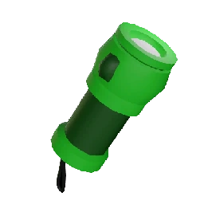
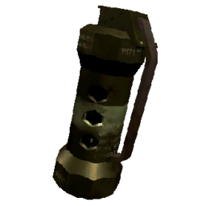
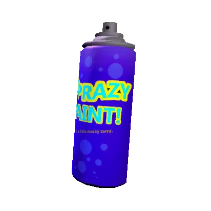

| Home Page | Merch | Moons | Enemies | Items |

Shovel:The shovel is the main damage output in lethal company. You can buy them for 30 scrap.

Flashlight:The flashlight is a light source. You can buy them for 15 scrap
Pro Flashlight:The pro flashlight is a better version of the flashlight which is why it's called a pro flashlight. They last longer and are brighter than normal flashlights so it's recommended you buy the pro flashlight instead of the normal one. They can be bought for 25 scrap.

Stun Grenade:A stun grenade is just flashbang that stuns enemies and blinds players for a couple seconds. You can also find makeshift stun grenades inside of facilities but they explode in your face instead of being able to throw them. You can buy a stun grenade for 30 scrap.

Walkie-Talkie:Pretty self explanatory. Gives you a way to talk to your teammates from a distance. They can be bought for 12 scrap.

Spray Paint:The spraypaint is kinda self explanatory. You are able to write stuff on surfaces. They eventually run out though. They cost 50 scrap.

TZP-Inhalant:The inhalant decreases stamina consumption and gives you a slight speed boost at the cost of making your vision disorted and your voice being high pitched for other players. You can buy them for 120 scrap.

Zap Gun:The zap gun stuns enemies which allows your teammates to attack the enemy that you are stunning with a shovel or shotgun. You can buy them for 400 scrap.

Boombox:The boombox really only plays music. It can also be used to lure eyeless dogs as well. They cost 60 scrap.
Extension Ladder:The extension ladder is basically just a ladder that can be dropped down and will extend out a ladder. They cost 60 scrap.
Radar-Booster:The radar booster does a lot of things so ill link the wiki page
here.

Jetpack:The jetpack is basically a normal jetpack. It has a weird controls so it can be hard to use at first but it isnt really worth it's cost which is 700 scrap.